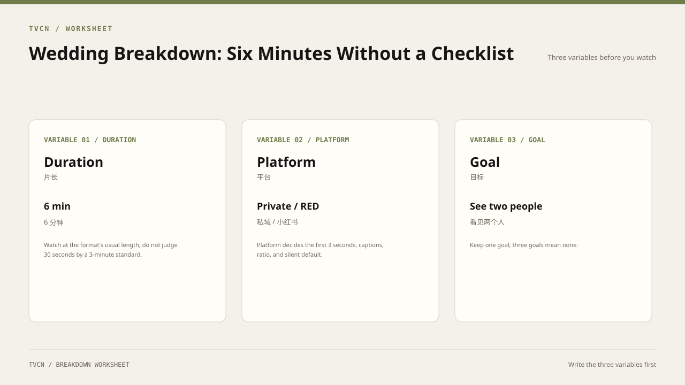

Fix Three Variables First
Fix three variables: six minutes, private/RED, and the goal is see two people, not a schedule. Find vows and reactions, then the quiet moment; slow motion is not structure.
Sample note: the timecodes below are a teaching sample for this format's usual length. They do not correspond to one specific film and are not frame-accurate analysis. Use the same positions on your own film; do not treat these beats as the only answer.
Timecode Breakdown: 11 Beats
Watch in order; do not read commentary first. For each beat record four things: picture, sound, job, and steal or do-not-copy.
- 0:00–0:10 | Picture: small prep actions: hands, clothing, doorway. Sound: ambience/zip. Job: person first, not venue. Steal: one hand action. Do not copy: venue wide.
- 0:10–0:25 | Picture: arrival: car, door, first look. Sound: ambience. Job: start the ritual. Steal: one entrance action. Do not copy: the whole motorcade.
- 0:25–0:45 | Picture: ceremony starts: aisle, officiant, guests. Sound: sync. Job: establish the space. Steal: one wide plus one reaction. Do not copy: ten angles.
- 0:45–1:15 | Picture: vows: two close shots, sync. Sound: vows lead, music back. Job: the core. Steal: keep breath/pauses. Do not copy: cover with music.
- 1:15–1:35 | Picture: rings/announcement: hands, guests. Sound: applause/laughter. Job: land the ritual. Steal: hand close-up plus one face. Do not copy: rings only.
- 1:35–2:00 | Picture: family: parents/grandparents reacting. Sound: ambience. Job: give the couple origins. Steal: one aged face. Do not copy: staged group photo.
- 2:00–3:00 | Picture: reception: two tables with specific reactions, not every table. Sound: sync. Job: turn scale into people. Steal: two specific tables. Do not copy: every toast.
- 3:00–4:00 | Picture: dance: first dance/friends teasing. Sound: sync/music. Job: emotional peak. Steal: one action plus one reaction. Do not copy: all slow motion.
- 4:00–5:00 | Picture: quiet: the couple in a corner/hallway, unguarded. Sound: ambience. Job: let the film breathe. Steal: one unguarded moment. Do not copy: staged look.
- 5:00–5:30 | Picture: portraits: two faces, no heavy filter. Sound: ambience/one vow echo. Job: leave the two people. Steal: natural-light close-up. Do not copy: skin smoothed to plastic.
- 5:30–6:00 | Picture: exit: car/door/empty venue. Sound: ambience out. Job: end. Steal: one exit action. Do not copy: summary captions.
Read the Structure
The spine is prep, arrival, ceremony, vows, rings, family, reception, dance, quiet, portraits, exit. It need not cover every schedule item; it must show two people becoming a family in one day.
Ask only three questions: what proof arrives in the first ten seconds; whether every ten to fifteen seconds adds information; whether the end lands one action, one change, or one question. If any is missing, a 6 min film falls apart.
Three Variables Before You Watch

Budget Order of Magnitude
Budget is a rough mainland-China production range, excluding media spend; it is an order of magnitude, not a quote. At the same length, a stage, cast, effects, or music rights can each double the cost.
- Low: RMB 8,000–20,000, two people, two cameras plus one mic, one day.
- Mid: RMB 20,000–60,000, three to five people, two or three cameras plus light/sound, one to two days.
- High: RMB 60,000–200,000+, director, camera, light, sound, post, two to three days.
Three Structures You Can Steal
Steal structure, not images. These three still work when you change the subject.
- List three unmissable beats: entrance, rings, vows.
- Keep vows in sync; music steps back.
- Hold one quiet moment with no camera awareness.
Three Reasons Not to Copy
Not “bad,” but built on different conditions; copying exposes your budget, platform, and audience.
- Do not copy all slow motion: it hides real reactions.
- Do not copy every table toast: they look the same and blur together.
- Do not copy heavy skin smoothing: two people become two plastic faces.
Breakdown Exercises
Do them before shooting; do not just read. Do the three in order, and the third must become a fifteen-second file.
- Before the ceremony list three unmissable beats; one safe camera each.
- Watch muted; does the vow section still carry emotion?
- Compress to ninety seconds: prep, vows, one family reaction, quiet, exit.
Image note. Covers, diagrams and step images on this page are editorial illustrations or structure diagrams, not photographs of a test performed here; they are not evidence of measured gear performance. Where an image is AI-assisted, the caption says so. Read the test conditions in the text before treating an image as proof.